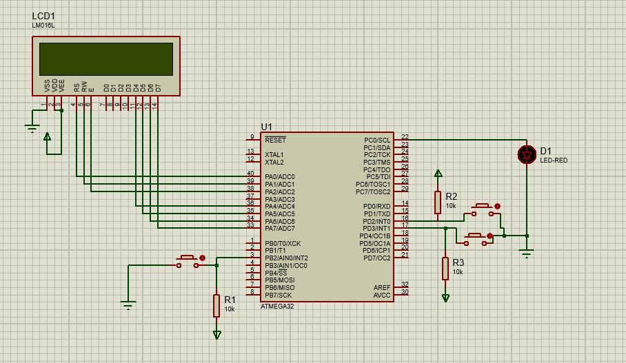
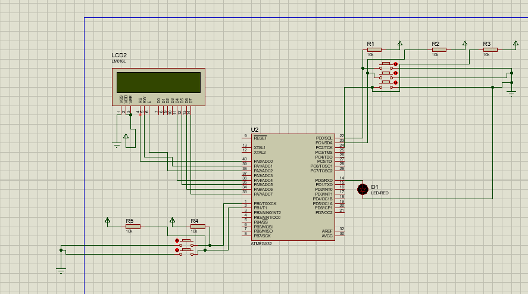

Overview
This project implements an electronic voting machine (EVM) on the ATmega32 microcontroller. It securely collects votes for three candidates, displays results on an LCD and determines the leading candidate. Three design approaches were developed and compared to find the most efficient and user-friendly one.
Problem statement
A voting machine must count every vote correctly, prevent accidental or repeated inputs, and be simple to use. The input method (interrupts, push buttons or a keypad) affects reliability and usability, so the project compares all three on the same hardware platform.
Engineering objectives
- Design a microcontroller-based voting system with vote casting, counting and result display.
- Implement and compare interrupt-driven, push-button and keypad-based input modes.
- Apply tamper-resistant design principles in the control logic.
- Verify the complete system in Proteus simulation.
System architecture
The ATmega32 reads voter input, updates a counter for each candidate and drives a 16×2 LCD that confirms each vote. A summary routine displays total votes and each candidate's count, and an LED indicator gives status feedback.


Methodology
- Designed the circuit around the ATmega32 with a 16×2 LCD, input devices and an LED in Proteus 8.
- Wrote the firmware in C (CodeVisionAVR) for each design: vote casting, per-candidate counting, total-vote summary and leading-candidate logic.
- Built three versions: interrupt-based, push-button and keypad-based (4×4 keypad).
- Simulated each design in Proteus and compared them for efficiency and ease of use.
Hardware and software
Hardware
- ATmega32 microcontroller
- 16×2 LCD
- 4×4 keypad / push buttons
- LED indicator
Software & tools
- C (CodeVisionAVR)
- Proteus 8 circuit simulation
- HEX files for programming
Implementation photographs
This project was completed in simulation, so there are no physical build photographs. The Proteus schematics are shown above. A screenshot of the keypad design will be added once it is exported from the Proteus project.
Results
All three designs were simulated successfully in Proteus with complete vote casting, counting and result display. The keypad-based design was selected as the best of the three for efficiency and ease of use.
Performance metrics
No quantitative performance measurements were recorded for this simulation-based project.
Key findings
- The keypad-based design gave the most efficient and user-friendly voting process.
- Comparing three input methods on the same microcontroller made the trade-offs between interrupts, polling buttons and keypad scanning clear.
Links
- GitHub repository (C source, Proteus files and HEX files for all three designs)